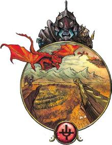
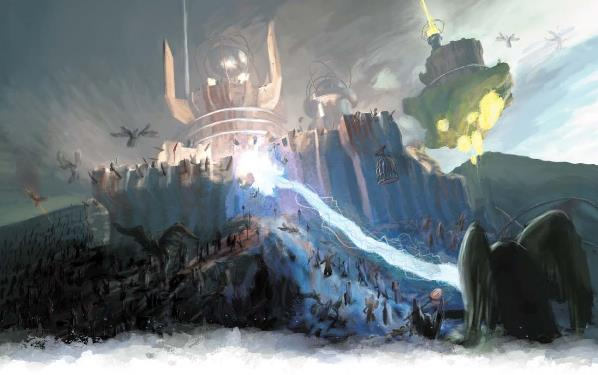

在撒法拉斯，天使和魔鬼被困在永恒的冲突之中。熠熠生辉的刀剑洒下灼热的鲜血，力场闪电将天使从空中击落。在某一位层，正义的勇士们驾着全副武装的巨龙，攻击着一艘巨型飞空艇。而在另外一层中，钢铁克拉肯撕裂了天界舰队。撒法拉斯只有一个恒久不变的主题：战争。
撒法拉斯的战争始于创世之初，并将一直持续到时间的尽头。它的主要参战者是不朽的，倒下的战士们在一天左右就会归来。双方势均力敌，谁都无法取得决定性的胜利。对外人来说，这场战争似乎毫无意义。在无主之地过去四百年间的冲突中，正义军团的前线大概仅仅推进了20英尺。凡人看到这一点，可能会问：“为什么要继续战斗？为什么不离开这场争斗，去做些其他的事情呢？”特别是，凡人通常会看到这些天界生物在战争中投入了大量资源，于是就会抗议道：“你们为何不帮助我们？你们自称是正义军团，但在你们打这场毫无意义的战争时，无辜之人正在瑟利奥斯特死去！”
天使们并非为某个国家而战，这场战争也不是由财富或政治目的所驱动。撒法拉斯的不朽者们相信，他们的战争映射了所有的现实。正义。暴虐。残酷。撒法拉斯的战争是这些军团之间力量平衡的一个显而易见的象征，当这个平衡在撒法拉斯发生变化时，不朽者们相信它在任何其他地方也都会发生变化。陨落的魔鬼将获得重生。新的飞空艇将取代那些被摧毁的飞空艇。但是每一次微小的胜利——每一个被击败的恶魔，每一次在无主之地的前进，都会加强各地的正义力量。每位天使都知道他们永远不会赢得真正的决定性胜利，但只要他们战斗，他们至少可以守住阵线。
所以对天使而言，一座人类城市甚至整个国家的毁灭都是微不足道的。凡人会死；这是他们最具决定性的特征。即使是富有同情心的天使，也仅只把凡人视为一片雪花而已：独特、美丽，但转瞬即逝（如果你触碰它，则会消逝的更快）。天使们在今天的凡人文明存在之前就已经战斗了很久，如果不是他们在无数个世纪里坚守着这条防线，物质位面将被混乱和残酷所淹没。
如果你是个英雄，你可能会看向天使，说道："我能做些什么帮上忙吗？我们能并肩战斗吗？" 对此，天使只是微笑着回应道："你已经身在其中了。" 就像每个凡人都在达库尔做梦，在玛伯尔都有一个影子一样，每个凡人的灵魂都有一些碎片参与了撒法拉斯的战斗。这些应征者的技能和力量反映了他们自身的勇气和意志......而且就像天使一样，你的这一部分可以在千万次的死亡中存活下去。所以在撒法拉斯的战场上战斗不是你的职责。你通过你的这一生来尽好你的职责，通过为你所相信的原则而战，无论你在哪里。
在撒法拉斯发生着战争，而战争也将在撒法拉斯永存。它无法被决出胜负，也不会止息。作为身处撒法拉斯的一个凡人，你的首要目标永远都应该是活下去——因为在撒法拉斯，有无数种致你于死地的办法。
你有一部分始终存在于撒法拉斯，你灵魂的一角一直处在战争之中。当你在撒法拉斯时，这些本能将会引导你。使得更容易造成致命伤害，或者咬紧牙关，在承受痛苦或受伤时继续战斗。
战争魔法War Magic。当一个生物施放一个能为AC、攻击检定或豁免检定带来加值的法术，或一个能给予临时生命值的法术时，持续时间会翻倍。持续时间为24小时以上的法术不受影响。
无尽怒火Unquenchable Fury。每当一个生物成为任何魅惑法术或能力的目标时，以及在面对安定心神和庇护术时，豁免均具有优势。此外，这些效果的持续时间减半，最小持续时间为1轮。当野蛮人处于狂暴状态时，它的狂暴无法提前结束，除非它被击倒昏迷。
征战不息Fight On。在一个生物的回合中，它可以用一个附赠动作来消耗1个HD。掷一次生命骰并加上它的体质调整值，恢复与该数值相同的HP（最低为1）。一旦一个生物从该特性中受益，它必须进行一次短休或长休才能再次这样做。
血流如注Bloodletting。当一个生物造成穿刺、挥砍或钝击类型的重击伤害时，它可以额外掷一个伤害骰，并将其加入重击伤害中。（译注：例如一次重击将造成3d6点伤害，则额外掷1个1d6）
时间弯曲Flexible Time。时间的流速在撒法拉斯的各位层之间是不同的。在许多层中，时间的流逝速度与主物质位面相同；如果你在燃烧天穹中战斗一小时，那么艾伯伦就会过去一小时。但是其他位层的速度则不同；你如果在无主之地的战壕里呆上一个月，却发现在艾伯伦只过了不到3天。一个在奥秘知识上熟练的生物可以通过DC14的智力检定（奥秘）来确定他所在位层的时间流逝速度。

撒法拉斯的所有生物都是战争的一部分，无论他们是士兵、战争机器还是牺牲者。那些参战之人都与军团联系在一起，如正义军团或暴虐军团。参战的不朽者们相信，每个军团都被一种更高阶的力量所支配——简单地说，就是统帅——这些力量共同塑造了不同的位层并决定了战斗的界域。不朽者不会质疑统帅，也不会想知道为什么事情是这样的。不朽者从不直接与他们所属军团的统帅打交道，他们甚至不知道这些力量是否以实体存在。
庞大的军团被分成较小的兵团，而这些兵团又被分成由一百名不朽者组成的百人战团，每个百人战团都代表战争的一个方面，如痛苦、怜悯或绝望。少数特殊的百人战团和个别不朽者可以在各位层之间移动，但大多数人都被束缚在他们的兵团和他们所处的位层。不朽者可能会被重新分配到新的兵团中，并被擢升或降级——通常与身体形态的变化相关联。这种最低限度的层间移动保持了平衡，因为百人战团的首领必须利用其所在层的力量，而军团统帅可以依据战略指挥几个百人战团在层间移动——究竟哪一层目前更紧迫的需要正义降临？
一次攻势的主要目标往往集中在摧毁一个重要的对手。正义兵团知道它无法将暴虐赶出无主之地，但击败主将阿斯塔若拉克斯（Lord commander Astaralax）将会是光明一方的重大胜利，尽管他有着不死之身，最终还会回来。有时，一个特别伟大的胜利可能会导致某个不朽者被“遣散”——当这种情况发生时，一个具有同等力量的新生命将取代它，但它将拥有一个新的人格，而原来的灵魂则被彻底移除。在计算军团之间力量平衡的庞大体系中，这种胜利将带来颇高的价值。
在无主之地，战壕里满是等待进攻的可怜士兵。刀锋之城充满了挣扎求生的无辜者和意图趁乱劫掠的人。巨龙翱翔在燃烧天穹——尽管这些都不是凡人。他们都是化身，是被征召来为这场史诗服务的意念。应征者看起来是有知觉的，但没有深度的人格或记忆，无法离开他们所在的层，除非与天界之人或魔鬼为伴，否则无法完成任何有意义的事情。只有在天使领导的冲锋中，无主之地的应征者方能体现其价值，虽然他们不可避免地会死亡，但他们最终会被重塑。应征者可以使用他们所显现的生物的统计数据，但可能不具有他们的全部能力；燃烧天穹的龙并不像真正的巨龙那样聪明。应征者通常难以辨认；很难将他们看真切，而且看到他们的人往往很容易把应征者想象成是他们自己所属的物种。
所有的凡人生物都与撒法拉斯有着灵魂上的联系，他们的灵魂在这个位面上有微弱的痕迹。这片灵魂的强度由凡人的勇气、意志力和战斗技巧决定。应征者是由这种灵魂能量形成的，甚至可能是由多个灵魂碎片形成的，但却没有意识；与伊瑞安的余烬不同，应征者与其来源所显现出的状态并不一致。
有时，在一个伟大的凡人战士死后，他们的人格和战斗之魂的回响可以凝聚成一个剑魂（然而它的能力可能根据它所回响的勇士而有所不同）。与标准的应征者不同，剑魂即使没有不朽者的引导，也能采取有意义的行动，并能指挥隶属于他们的应征者。剑魂有其凡人来源的外观和一些记忆，但它依旧只是凡人的回响，就像施展死者交谈时回应你的记忆残留一样。剑魂将他们的记忆与层内的战争相适应。如果有一个征服者坎恩的剑魂在无主之地指挥军队，他就会相信自己是在为坎纳斯而战，而且无法被说服动摇；毕竟他只是一个记忆，而且他的逻辑能力也十分有限。
所以冒险者们可能会遇到拉扎尔，她正在血腥之海中指挥着一艘舰船。达卡尼的勇士、摩洛领的缔造者、终末战争的英雄——这些人中的任何一个都可以作为剑魂出现，为最符合他们价值观的军团服务。泰伦那多精灵的许多先祖守护者都有剑魂在此；然而，这些并不是守护者本身，只是留下的回响。虽然剑魂通常在凡人死后形成，但特别杰出的英雄的灵魂碎片甚至在活着的时候也能显现出剑魂。布鲁兰国王勃兰奈尔肯定有一个剑魂在正义兵团服役，而冒险者也有可能在探索撒法拉斯的时候遇到自己的剑魂。
撒法拉斯的锋刃旋涡是神秘且致命的。它们具体表现就是集群的活化武器——刀、剑——劈空而来，将任何不幸挡在它们前面的东西斩尽杀绝。有时，它们像鸟群一样遵循统一的路径。其他时候，它们则会在瞬间出现，向受害者扑去，然后消失不见。锋刃旋涡可能是一种防御机制，旨在防止凡人干扰撒法拉斯，凡人在撒法拉斯停留的时间越长，他们就越有可能被袭击。这些锋刃旋涡也会逸出到物质位面中爆发异常残酷战争的区域，使参战各方血流成河。
锋刃旋涡可能会以匕首之云的形式出现，但体积和伤害都可能会增加，或者在地表缓慢移动，以剑刃护壁的形式呈现其最具有毁灭性的一面。
撒法拉斯的大多数天界生物都为正义军团服务，它体现了为正义事业而战的理念。兵团和组成兵团的百人战团即是这一宽泛理念的具象体现。慈悲百人战团对倒下的敌人示以仁慈，而无辜卫士百人战团则保护平民——即使他们只是应征者，也是概念上的平民——并避免造成不必要的伤害。天使不会征召冒险者，但也不会脱离他们的职责去帮助他们。
撒法拉斯的天使有一个战术上的特点，他们大多都是身穿盔甲，脸和种族都被隐藏在全盔后面。任何种类的天使都可以在撒法拉斯找到，其力量反映了其地位。异界神侍指挥着数个百人战团，而每个兵团则由一个炽天神侍或具有更强实力的天界生物来指挥，例如至高天。虽然天使们为正义统帅服务，但也有一些单位专门效忠天命诸神。太阳百人战团宣称杜·哈拉即是正义统帅，而由杜·哈拉的圣武士形成的剑魂则为这个百人战团效忠。
虽然正义军团是最大的天界生物军团，但还有一些规模较小的军团。其中最引人注目的是自由军团，反映了为终结压迫而进行战争的理念。他们很少出动大军，而是采用快速突袭和游击的方式参战；这些天使体现了为崇高的事业与极端危难作斗争的英勇理念，即使这迫使他们走上不那么崇高的道路。
恶魔代表着战争的混乱与野蛮。大多数为残酷军团服务，他们狂野、残暴，远不如暴虐军团的魔鬼部队有纪律。他们折磨平民，对附带的间接伤害甚至由此而造成的己方损失也丝毫不以为意，并且很少会去努力守住领土。他们的宗旨纯粹就是为了对敌人和他们自己的地区造成最大的伤害。废土百人战团毁灭了他们战斗的地区，而恐怖百人战团则用他们受害者的尸体创造了可怕的京观，并以心理战为乐。残酷军团无论屠杀魔鬼和天使都乐在其中，并被正义和暴虐所鄙视。
在残酷军团中可以找到各种形式的恶魔；他们的造型反映了他们的战斗职责，许多人穿着破旧的盔甲、钢制的鳞片，或者只是周身涂抹着鲜血。巴古拉魔和狂战魔是野蛮的冲锋部队。喀嘶魔和弗洛魔充斥着天空，而巨牛魔则是活体攻城兵器。六臂蛇魔和巴洛炎魔指挥着数个百人战团，而兵团可能由具有恶魔王子力量之辈领导。与撒法拉斯的所有不朽者一样，重要的是要记住，这些恶魔首先是战争的化身；无论恶魔在其他位面可能扮演什么角色，在这里，它纯粹是为了永恒的战争。也许有一个骸骨兵团在战斗中利用不死生物的应征者，由一个与奥喀斯一模一样的恶魔所指挥——但这个将军并没有奥喀斯那样的野心，而是专注于粉碎太阳兵团的层层包围。
与效忠天命诸神的天使一样，一些恶魔将自己和他们的部队献身于黑暗六神。恐怖百人战团内的许多人穿上了他们从敌人那里剥下的皮，并断言嘲弄是残酷统帅的一部分。
魔鬼可以像恶魔一样残忍，但他们代表了致力于有序统治与压迫的战争行径，而且大多数为暴虐军团服务。他们寻求粉碎希望，对魔鬼来说，任何形式的背叛或不光彩的行为都过于低级。然而，他们比残酷军团的野蛮集群要有纪律性得多，工作精确，计划周全。枷锁百人战团强迫敌人的应征者（和不幸的冒险者）为他们作战，并把平民应征者作为活的挡箭牌。巨蛇百人战团总是愿意谈判，并会提出许多令人满意的条件，但和他们的任何契约都不可避免地会招致背叛。
所有类型的魔鬼都可以在暴虐军团中找到。他们唯一的重点是战争；他们支配并腐蚀应征者，但不会寻求物质位面凡人的灵魂。须魔和棘魔作为部队的基础力量，而欲魔精锐小队则从天而降。安祖魔和巴洛炎魔指挥着数个百人战团，而拥有大魔鬼力量的生物则领导着兵团。
苦痛兵团的魔鬼们说，嘲弄是暴虐统帅的一部分，这种信念助长了与恐怖百人战团的魔鬼们的仇恨。奇怪的是，铁手百人战团坚持认为，天命诸神奥林指引着暴虐统帅，他们只是在颁布他对万物秩序的远见卓识。
撒法拉斯的战场包含了不同于在艾伯伦所能想象的任何战争机器。血海中的钢铁克拉肯。巨型大炮可以一炮击毁萨恩的高塔。巨大的怪兽被用作活体攻城撞锤。然而，即使是这些最宏伟的造物也并非工业或奥秘科学的产物——它们也是征召而来的。强大的大炮并不是在某个庞大的铸造厂里锻造出来的，而是由这一层本身所形成的，因为它是这场战争理念的一部分。费尼亚是一个工业位面，奇械师可能会从土巨灵那里学到令人惊叹的技术；相比之下，在撒法拉斯，奇械师可能会从他们看到的东西中得到启发，但大多数最伟大的武器是无法复制的。
撒法拉斯有无数个位层，每一层都反映了不同的战争。阴影森林（Forest of Shadows）里发生着一场激烈的游击战。巨岩（The Monolith）是一个始终被围困着的强大堡垒；偶尔，进攻方会把它从防守方手中夺走，这时，之前的防守方又开始了新的围城之战。各层之间是通过重重设防的传送门网络连接的，但最强大的不朽者可以凭借自己的力量在各层之间穿梭。每个军团都有一个统帅中枢或司令部在处于各层之中。军团可能在较小的位层只部署几个百人战团，但如果一个位层足够大——比如无主之地——它可能足以容纳整个兵团。
以下是撒法拉斯的几个位层的例子，但几乎任何战争的形式都可以产生一个位层。
作为最大的一层，无主之地是一个面积相当于小型国家的战区。它被几条深邃的、重兵把守的战壕分割开来，战壕被焦土、爆炸留下的大坑和骨头组成的轰击区隔开。无主之地的多条战壕线在整个区域内蜿蜒曲折，而在战壕之间的土地上则是战略前哨。该地区的特点是持续的炮轰和可怕的大规模杀伤武器——大范围的死云术，将应征者变为嗜杀之人的诅咒，甚至更可怕。
暴虐、残酷和正义是该地区三个活跃的军团。正义在无主之地的处境很艰难，但一直在缓慢的积蓄实力。统帅们定期派遣部队在两线之间的战场上进行战斗，要么是简单的小规模冲突，要么是全面的攻势。这一切都导致这一层的主题将是缓慢、痛苦的僵局，以及战争对土地和士兵造成的痛苦。值得注意的是无主之地的时间流速；在这一层每过10分钟，在艾伯伦就只过1分钟。所以这是一场漫长而缓慢的斗争——你可以在这里呆上几个月，而在艾伯伦只错过了一个星期。
天空中充斥着许多飞空艇，有些大到足以成为一座浮空城。一些岩石岛屿漂浮在坚实的云层中，即使下面有任何陆地，也被致命的雾气所掩盖。虽然岩石岛屿上有小规模的冲突，但大部分的战斗都发生在空中。有翅膀的天使和魔鬼在空中盘旋和缠斗，而应征者则驾驭着巨龙和其他空中坐骑。
看上去这里曾经是一座充满奇迹的城市，有可与萨恩相媲美的高塔、镀金的纪念碑、博物馆、花园等等。但刀锋之城位于正义军团和暴虐军团的庞大军队之间，它代表了残酷的战争对一座辉煌城市的影响。接连不断的轰炸是一种持续的威胁。平民应征者正在为他们自己的庇护所和日常供给而战斗；一些人为了共同的利益团结在一起，而另一些人则成为抢劫者和强盗。正义和暴虐在城市的两边坚守阵地，依靠轰炸和偶尔的攻击相互交战。残酷军团在城市内散布恐怖，而自由军团的天界生物则试图团结普通人对抗所有敌人。
在这个水生位层中没有大陆，但少数的岛屿支持着交战的舰队。宏伟而强大的战舰在广阔的水域中爆发战斗，并对定居点进行轰炸。这些战舰可能是我们所熟悉的，但还有许多其他不寻常的战争兵器：构装体克拉肯、潜水战舰、怪兽和被迫服役的巨龙——那些艾伯伦的人们可以想象但还无法创造的奇迹。海盗女王拉扎尔必然化身为了血海中的一位剑魂......但她的剑魂将为哪个军团服务？
乍一看，这一层就像无主之地的战壕之间被炸毁的土地。这里有许多混战中的城市，但它们并不是静态的据点。相反，有些是浮空的堡垒，就连布鲁兰的亚贡斯也相形见绌，还有一些以两条腿行进的城市。《艾伯伦：从终末战争崛起》中的巨像战俑可以作为某种小型堡垒的雏型。
以下是撒法拉斯影响物质世界的几种方式。
与撒法拉斯有关的显能区域通常会激发人们的暴力和侵略性，并能体现该位面的任何普遍特性。这些区域可能是危险的居住地，但也能激励战斗水准和强化军事素养。虽然撒法拉斯许多最伟大的武器无法从这个位面移走，但与撒法拉斯相关的显能区域往往能给奇械师和铁匠提供灵感，而且在撒法拉斯显能区域可能会制作出致命的结界，而在显能区域之外则根本不可能。
显能区域不太可能成为通往撒法拉斯的通道，但当撒法拉斯与主物质位面相接时，一切皆有可能。
当与撒法拉斯相接的时候，人们很容易动怒，必须注意不要因为小事而争吵。愤怒的话语更容易产生争执，而焦躁的思想则会导致暴动或革命。该位面的战争魔法和无尽怒火特性在其相接时会传播到全世界，刺激着各种暴力行径。同时，在撒法拉斯的显能区域，激烈的冲突爆发会吸引锋刃旋涡进入该区，屠杀参战各方的人。
一般而言，撒法拉斯每36年就有1年的相接期。纵观历史，一些军事领袖会围绕这一点策划战役，而爱好和平的社会则提前筹谋以遏制暴力。除了常规的周期外，撒法拉斯还经常在某天突然相接；在终末战争期间，预测这些时期对制定战争策略至关重要。
同样按照惯例，撒法拉斯每36年就会远离一年，此期间不会偶然出现某天突然相接的情况，除此之外对物质位面没有明显的影响。
与费尼亚的元素们不同，撒法拉斯的不朽者们并不创造武器和战争机器；这些东西是由这个位面本身所塑造的。许多最伟大的武器——可以夷平城市的炸药，和小城镇一样大的飞空艇——要么无法从撒法拉斯带走，要么在其他地方无法使用。但是撒法拉斯是一个潜在的盔甲、武器和战争机器的来源，从普通物品到兵团指挥官所挥舞的神器都是如此。这些可能是多元宇宙中最强大的一些武器——但它们同样也是不可替代的。你可以偷取骸骨兵团领主的奥拉西斯魔杖（Wand of Orra'Cys）——但他绝对会要寻回它，并可能部署恶魔、邪术师或其他特工来夺回它。
一个物品与哪个军团有关会影响其外观。正义军团的道具闪亮且鼓舞人心，而那些与暴虐军团有关的道具则既阴森又令人生畏。
最简单的故事就是关于在此地生存的故事，在被无尽的战争摧毁之前逃离撒法拉斯。但撒法拉斯的冒险也可以涉及主物质世界；这里有一些点子可供参考。
战争之刃Blades of War。卡尼斯家族在一个与撒法拉斯相接的显能区域里建立了一个制造武器的锻造厂。一切都很顺利，直到一次位面突然相接导致释放出了锋刃旋涡，一切陷入了混乱。更糟糕的是，一些实验性的构装体开始暴走，一种实验性的撒法拉斯爆炸物将在五小时内引爆......而刀锋统主的一名特工很可能在混乱中潜入了锻造厂。冒险者们能控制住局面吗？
汹涌澎湃The Surge。在费尔海文，一位奇械师创造了一台魔王装置（eldritch machine）来引导撒法拉斯的力量——但它的效果却出乎意料的强大。当与撒法拉斯相接时，魔王装置放大了每个人的侵略性。整个城市爆发了暴乱和抢劫，而守卫们则采取了残酷的行动来压制。冒险者们能否在城市分崩离析之前找到并解除机器的能力？这究竟是一个鲁莽的奇械师的杰作，还是与拉克·塔尔赫什（Rak Tulkhesh）的邪教或翡翠利爪组织有关？
致命武器Deadly Weapon。冒险家们发现了一具尸体，手里握着一把斩首剑——一把属于“苦难”的剑，苦难（Misery）是暴虐军团的一名欲魔。一名银枢部（Argentum）的特工在试图将这把剑带到一个可以摧毁它的地方之前就死了。冒险者们是想完成任务，还是把这把强大的剑据为己有？如果他们选择保留它，苦难最终会来寻回她的剑......而且这个残忍的不朽者想要花些时间来折磨那些玷污了她的剑的凡人。